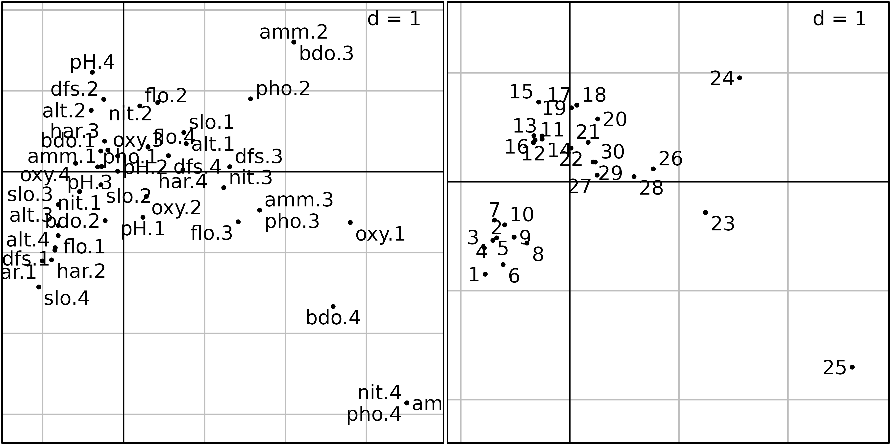
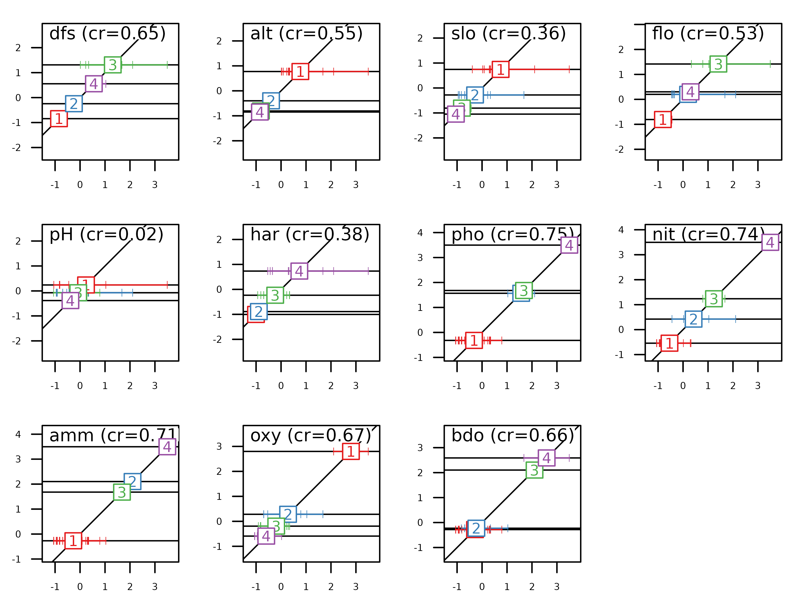

Description of environmental variables structures
Source:vignettes/articles/ChapEnvVarStruct.Rmd
ChapEnvVarStruct.RmdAbstract
This vignette is about several simple data analysis methods that can be used to describe the structure of environmental variables tables. Simple here means that these methods are adapted to the analysis of only one data table. If more information is available, for example information on the structure of the table (e.g., groups of rows or of columns), or if information is contained in more than one data table, then other methods should be used.
The vignette is organized in three parts, corresponding to three data
analysis methods: normed PCA for quantitative variables,
multiple correspondence analysis (MCA) for qualitative
variables (factors in R), and the Hill and Smith
analysis for tables containing a mix of qualitative and
quantitative variables.
Introduction
Several simple data analysis methods can be used to describe the structure of environmental variables tables. Simple here means that these methods are adapted to the analysis of only one data table. If more information is available, for example information on the structure of the table (e.g., groups of rows or of columns), or if information is contained in more than one data table, then other methods should be used. According to the type of measured variables (quantitative, qualitative or both), different methods can be considered.
These different approaches will be illustrated using the
doubs data set, from ade4 (see
Verneaux1973 and help("doubs", package "ade4")) . The
doubs$env data frame contains eleven environmental
variables measured at 30 sites along the Doubs river in the Jura region
(France). The doubs$fish data frame contains the abundances
of 27 fish species that were found in the same sites. The
doubs$xy data frame contains the spatial coordinates of the
30 sites (two columns, x and y).
names(doubs$env)
#> [1] "dfs" "alt" "slo" "flo" "pH" "har" "pho" "nit" "amm" "oxy" "bdo"The eleven variables are:
-
dfs: distance from the source (km * 10) -
alt: altitude (m) -
slo: log(x + 1) where x is the slope (per mil * 100) -
flo: minimum average stream flow (m/s * 100) -
pH(* 10) -
har: total hardness of water (mg/l of Calcium) -
pho: phosphates (mg/l * 100) -
nit: nitrates (mg/l * 100) -
amm: ammonia nitrogen (mg/l * 100) -
oxy: dissolved oxygen (mg/l * 10) -
bdo: biological demand for oxygen (mg/l * 10)
This environmental table can be represented graphically using the
table.value or table.image function of the
adegraphics package. Here the data are represented
using the table.value function. As the ranges of variation
of the differental environmental variables are quite different, we
scaled the data to allow a common and meaningful graphical
representation:
env <- doubs$env
apply(env, 2, range)
#> dfs alt slo flo pH har pho nit amm oxy bdo
#> [1,] 3 172 1.099 84 77 40 1 15 0 41 13
#> [2,] 4530 934 6.176 6900 86 110 422 620 180 124 167
table.value(scale(env), symbol = "circle")
As the spatial coordinates are also available, sites can be plotted
in the geographical space. The s.label function can be used
to draw the position of sites, with the site number as label and with
the s.traject to draw lines between sites.
xy <- doubs$xy
sl1 <- s.label(xy, ppoints.cex = 0, plot = FALSE)
st1 <- s.traject(xy, ppoints.cex = 0, plabels.cex = 0, plot = FALSE)
s1 <- superpose(st1, sl1, plot = TRUE) To facilitate the interpretation of environmental data, information
of both figures can be combined by creating thematic maps for all
variables. To achieve this, we use the s.value function,
with multivariate data in the z argument. It automatically
loops over the variables and produces 11 geographical maps presented
here. By default, this function plots squares which size is proportional
to a set of values. The colour of the squares gives the sign of the
value (white for negative values, black for positive). Here, we modify
the method, symbol and
ppalette.quanti parameters to obtain figures with coloured
circles.
mypal <- colorRampPalette(c("#EDF8FB", "#006D2C"))
s.value(xy, doubs$env, pgrid.draw = FALSE, porigin.draw = FALSE, plegend.drawKey = FALSE,
psub.cex = 2, method = "color", symbol = "circle", ppalette.quanti = mypal, ppoints.cex = 0.5)The maps presented here highlights that some environmental variables
have similar spatial distributions (e.g., distance from the source
(dfs) and stream flow (flo)). The objective of
multivariate methods is to provide a summary of this environmental table
by identifying the main patterns of variation and which variables are
involved in these structures.
Standardised Principal Components Analysis (PCA)
Principal Component Analysis (Pearson 1901; Hotelling 1933) is the
most simple and the basis of all multivariate analysis methods. It
allows to summarise the structure of a table containing quantitative
variables. Many theoretical models lead to the same computations, but
the duality diagram (Escoufier 1987) and the geometric model (LeRoux and
Rouanet 2004) are the ones used in the ade4 package. In
the ade4 package, the dudi.pca function is
used to compute a PCA, and all the outputs of this function are grouped
in a dudi object (subclass pca).
Two types of PCA are generally distinguished: covariance matrix PCA and correlation matrix PCA. They can be considered as the same method, applied after a different treatment of the data table: centring (subtracting the mean of each variable) for covariance matrix PCA and standardisation (subtracting the mean and dividing by the standard deviation) for correlation matrix PCA.
In the case of the env data table, the choice between
covariance or correlation matrix PCA is easy: variables are not
expressed in the same units and have very different variances, ranging
from 1 to more than 3.106. Here, differences in variances are
meaningless and should not be considered in the analysis. Using a
correlation matrix PCA is therefore necessary to remove these
differences.
When all the variables are measured in the same units (homogeneous tables), both types of PCA can be applied. PCA on covariance matrix would give more importance to variables with high variance as they contribute more to the total inertia and thus will have more weight in the definition of axes. On the other hand, PCA on correlation matrix will give an equal importance to all the variables so that only the redundance (i.e., correlations) among variables drives the definition of axes. To choose between the two possibilities, users must decide if the differences between variances are (or not) a useful information that should be taken into account in the analysis. For example, in toxicity tables, all the values are LD50 (lethal dose 50, i.e., the concentration that kills 50% of organisms), and the columns correspond to different chemical compounds instead of different variables. Using a correlation matrix PCA on these tables will probably remove important information about the difference in toxicity between chemical compounds or between the diversity of species. In these cases, a covariance matrix PCA (argument scale set to FALSE) is preferable.
The PCA of the doubs$env table is computed with the
dudi.pca function and stored in the pca1
object:
pca1 <- dudi.pca(env, scale = TRUE, scannf=FALSE, nf=3)The scale argument is set to TRUE (the
default value), so the PCA will be computed on the standardised (centred
and normed) data table. The result is therefore a correlation matrix
PCA.
The scannf argument (“scan the
number of factors”) is set to FALSE,
which means that the number of axes should not be asked to the user, but
arbitrarily set to three. This value (three) is given by the third
argument, nf. If nf is not set explicitly, it
defaults to two. When running in interactive mode, the
scannf argument should not be used, and its default value
(TRUE) will cause the function to ask the number of axes
(principal components) interactively to the user. This is the number of
axes that should be “kept” in output files, and on which loadings and
scores will be computed.
Many methods have been invented to try to guess the number of
principal components that should be kept after a PCA. In
ade4, users are simply asked how many components they
want. To help answer this question, dudi functions display
a barplot of eigenvalues in decreasing order. The user should then try
to find a discontinuity in the shape of the decrease, and choose to keep
the axes corresponding to eigenvalues placed before (on the left of)
this discontinuity.
For example, in the following figure, the user should keep (from left to right) 2, 3 and 4 axes.
Of course these examples are quite caricatural, and in real
situations, it can be much harder to choose an appropriate number of
principal components. However the principle remains that the shape of
the decrease of eigenvalues is a good indicator of the presence of
structures in the data table. Trying to keep the axes that correspond to
these potentially interesting structures is therefore a good and
easy-to-use rule. As an alternative, the procedure developed by Dray
(2008) is implemented in the testdim function that can be
applied on correlation matrix PCA created by the dudi.pca
function with scale = TRUE.
testdim(pca1)$nb.cor
#> [1] 2The next figure shows the barplot of pca1 eigenvalues.
Three principal components were kept (although the testdim
procedure said two).
screeplot(pca1, main=" ", xlab=" ")
The correlation circle of the variables (left) and the factor map of sites (right) on the first two principal components are shown in the next figure.
sc1 <- s.corcircle(pca1$co, plot = FALSE)
sl1 <- s.label(pca1$li, plabels.optim = TRUE, ppoints.cex = 0.5, plot = FALSE)
ADEgS(list(sc1, sl1))This correlation circle (sc1 object) shows two nearly
orthogonal gradients: a geomorphological gradient opposing altitude and
slope to hardness, distance from the source and stream flow, and a
chemical gradient, opposing dissolved oxygen to phosphates, ammonium,
and biological demand for oxygen. Oxygen concentration is higher
upstream, and pollution is higher downstream, so these two gradients are
not completely orthogonal. The first principal component is an
upstream-downstream gradient, while the second component opposes
geomorphology to chemical processes.
The factor map on the right (sl1 object) shows that the
sites are ordered along the first principal component, from site 1
(upstream, 300 m from the source) to site 30 (downstream, 453 km from
the source). Departures from this geomorphology gradient are explained
by the chemical gradient: sites with a high concentration of oxygen (1,
4, 7, 11, 12, 13, 14, 15) are in the lower-left part of the graph, and
sites with a high concentration of ammonium, phosphates and a high BDO
(23, 24, 25) are in the upper-right part of the graph.
The site coordinates can also be used to draw geographical maps of
site scores, using the s.value function. This next figure
shows the map of site scores on the first two principal components. The
first principal component (left) is clearly an upstream-downstream
gradient, with the exception of sites 23 to 25 (see site numbers in
previous figure). The second principal component (right) cuts this
gradient in four parts: the upper stream (sites 1 to 22) is divided in
two, according to altitude and slope, and the lower stream (sites 23 to
30) is divided according to the pollution variables (ammonium,
phosphates and BDO) which are higher in sites 23 to 26 and lower in
sites 27 to 30.
s.value(xy, pca1$li[, 1:2], pgrid.draw = FALSE, porigin.draw = FALSE, method = "size",
symbol = "circle", col = mypal(2), ppoints.cex = 1)The upstream-downstream gradients and the particular characteristics of highly polluted sites (sites 23 to 26) or of sites with high oxygen concentration (11 to 15) appear very clearly on these maps.
More generally, the geographical maps of site scores and their comparison with the collection of maps of standardised variables can be very useful to help interpret the outputs of a PCA. Drawing these maps is not possible when there are hundreds of variables (as it is the case for DNA fingerprints, for example), but then, particular variables of interest (e.g., variables with the most important relative contributions, see Box 3.3) can be chosen and mapped.
Multiple Correspondence Analysis (MCA)
Multiple Correspondence Analysis (MCA) is the basic method to analyse
tables of qualitative variables (see the synthesis by Tenenhaus1985)
that are stored as factors in R. We
illustrate MCA with the same data set, but we obtain qualitative
variables by spliting the quantitative variables into categories. Four
categories are defined automatically for each variable using the
cut function. This function is applied to the environmental
variables with the apply function, and the resulting
qualitative variables are stored in the fenv data
frame.
fenv <- apply(env, 2, cut, breaks = 4, labels = 1:4)
fenv <- as.data.frame(fenv, stringsAsFactors = TRUE)This transformation induces a loss of information as different values for a quantitative variable are regrouped into a single category of the recoded qualitative variable. However, this approach can be useful when non-linear relationships occur between variables. In this case, PCA which is based on correlations, will only be able to extract linear relationships wherears MCA can identify non-linear trends by reordering the categories. When the relationships between variables are (at least approximately) linear, the results of both methods should be comparable.
plot(env[, 1] ~ fenv[, 1], ylab = "Quantitative dfs", xlab = "Qualitative dfs")
MCA allows to identify associations between the categories
(levels) of different qualitative variables
(factor). The method is implemented in the
dudi.acm function of the ade4 package. All
the outputs of this function are grouped in a dudi object
(subclass acm). Here, we applied MCA on the data frame
fenv.
The main difference between PCA and MCA is that the columns of the analysed table are the variables in PCA but the categories of qualitative variables in MCA:
ncol(pca1$tab)
#> [1] 11
ncol(acm1$tab)
#> [1] 44The categories correspond to the different columns in the disjunctive table analysed by the MCA which means that their order is not taken into account, just like different variables in a PCA. As a consequence, the number of eigenvalues is also increased in MCA. Another important difference is that MCA weights columns proportionally to the number of individuals belonging to the categories so that all variables have the same weights (as in PCA):
as.numeric(by(acm1$cw, rep(1:ncol(fenv), each = 4), sum)) * ncol(fenv)
#> [1] 1 1 1 1 1 1 1 1 1 1 1The next figure shows that, except for an inversion of the sign of
the second axis, the factor map of sites is still very similar to the
factor map obtained by the PCA. The same typology of sampling sites
along the stream is found: upper-stream sites (1 to
10) with high oxygen concentration and low ammonium and BDO
are opposed to lower-stream sites (26 to 30),
with sites 23 to 25 having an exceptionally
high level of pollution.
sl1 <- s.label(acm1$co, ppoints.cex = 0.5, plabels.optim = TRUE, plot = FALSE)
sl2 <- s.label(acm1$li, ppoints.cex = 0.5, plabels.optim = TRUE, plot = FALSE)
ADEgS(list(sl1, sl2))
The graph of categories (left) is somewhat different because we now
have one point for each category of each qualitative variable (44
categories as a whole) instead of 11 points only. The interpretation is
however the same: categories corresponding to high levels of ammonium
and BDO (amm.4, bdo.4) and to low levels of
oxygen (oxy.1) are on the right of the graph, where highly
polluted sites are found. Conversely, categories corresponding to high
levels of oxygen (oxy.4), high values of slope
(slo.4), low values of flow (flo.1) and
hardness (hard.1, hard.2) are located on the
left of the graph, where upper-stream sites are found.
MCA allows to carry out the interpretation of factors at the level of
categories. This means that one can get a better (finer) explanation of
the meaning of factors. In the ade4 package, this
property is used to draw particular graphs that show which individuals
belong to each category. Two types of graphs can be drawn, using
functions score and plot.
The first type of graph (using the score function) shows
the results of MCA for a given axis (specified by the xax
argument which is equal to 1 by default). The normed coordinates of all
the individuals (acm1$l1) are placed along the x-axis and
the categories are displayed at the mean of the coordinates of their
individuals. The vertical coordinate is given by the category score
(acm1$co). It is then easy to interpret the meaning of the
factor by looking at the positions of categories and individuals. For
example, on this figure, one can see that the categories of variables
hardness, phosphorus, nitrates, ammonium and BDO are ordered by
increasing values along the first MCA factor.
score(acm1, type = "points", col = TRUE, psub.cex = 1.5)
Conversely, the categories of variables altitude, slope, oxygen are
ordered by decreasing values along the first MCA factor. On the vertical
axis, the intervals between labels give information of the differences
among categories (variance between categories). On the horizontal axis,
the spacing among the tick marks allows to evaluate the homogeneity of
individuals in a category (variance within categories). As the
individual scores in MCA (acm1$l1) maximise the mean
correlation ratio for all the qualitative variables, it is expected that
the more vertical is the regression line for a qualitative variable, the
higher is its correlation ratio value.
Correlation ratios are stored in acm1$cr:
acm1$cr
#> RS1 RS2
#> dfs 0.65016681 0.54171843
#> alt 0.54859870 0.46823722
#> slo 0.36285735 0.18818923
#> flo 0.52994726 0.57221033
#> pH 0.02395703 0.15608652
#> har 0.37615802 0.26756014
#> pho 0.75418361 0.33688896
#> nit 0.73983937 0.53046062
#> amm 0.71443072 0.36912488
#> oxy 0.67303617 0.07847305
#> bdo 0.65985629 0.38952981The second type of graph is shown in the next figure. It can be drawn
using the plot function. It is a bidimensional plot, with
two MCA axes as abscissae and ordinates (specified by the
xax and yax arguments, with default values
equal to 1 and 2 respectively). Each category of each variable is
displayed by an ellipse. The position of the center of the ellipse is
given by the means of the coordinates of the individuals
($li) belonging to the category. The width and height of an
ellipse are given by the variance of the coordinates of the individuals,
and the covariance between the coordinates on the two axes gives the
slope of the ellipse. The interpretation of this figure is the same as
the previous one, but it is much more easy and detailed, as the
categories of all the variables are not superimposed.
plot(acm1, col = TRUE, psub.cex = 1.5)
Hill and Smith analysis
Environmental data sets with exclusively qualitative variables are not very frequent. Some variables are easy to measure automatically on a continuous scale, while others are intrinsically qualitative. So the most frequent case is a table containing a mix of qualitative and quantitative variables. In this case, one can choose between two strategies: transforming quantitative variables to qualitative ones and using MCA, or considering qualitative variables as quantitative ones and using PCA.
The first strategy can be used when the number quantitative variables
is low. If this is not the case (most variables are quantitative with
just a few qualitative ones), the loss of information may badly
influence the results of the data analysis procedure. The second
strategy can be used when qualitative variables are in fact ordered
qualitative variables (e.g., categories low}, medium
and high). In this case, using PCA can be relevant (if linear
trends are expected) but it is not a viable solution when qualitative
variables contains categories that cannot be oredered (e.g.,
blue, red and green).
The Hill and Smith Analysis (HillSmith76) is a data analysis method that is able to deal directly with a data table containing a mix of quantitative and (ordered or unordered) qualitative variables. This method does not modify the original characteristics of the variables, avoiding the arbitrary choices of the two previous strategies. If all the variables are quantitative, then the results of HSA are identical to those of PCA. If all the variables are qualitative, then the results are identical to those of MCA. And if there is a mix of quantitative variables and qualitative variables, then the analysis is an optimal combination of the properties of the two analyses.
The row weights of this analysis are the same as the row weights of the PCA of the p quantitative variables, and are also equal to the row weights of the MCA of the q qualitative variables. The column weights are different: for quantitative variables, column weights are equal to 1/(p+q), instead of 1 in a PCA. For qualitative variables, the weights are computed as in MCA (sum of the weights of the individuals belonging to each category, divided by q), except that it is divided here by the total number of variables (p+q) instead of q. The total sum of column weights is therefore equal to 1, and qualitative and quantitative variables have the same weights.
To illustrate HSA, we consider the Doubs data where the first six variables are considered as qualitative and the last five as quantitative:
menv <- cbind(fenv[, 1:6], env[, 7:11])The Hill and Smith Analysis is then computed on the resulting table
using the dudi.hillsmith function of the
ade4 package. The scatter function can
then be used to draw the biplot, where quantitative variables appear as
simple labels, while qualitative ones appear with one label for each
category.
hs1 <- dudi.hillsmith(menv, scannf = FALSE)
scatter(hs1, posieig = "bottomleft")The score function can also be used to highlight the
properties of the method. HSA maximises the squared correlation for
quantitative variables (i.e., the criteria of PCA) and the
correlation ratio for qualitative variables (i.e., the criteria
of MCA). As consequence, the next figure can be interpreted as the
previous one for quantitative variables and for qualitative
variables.
score(hs1, col = TRUE)These values are also stored in hs1$cr:
hs1$cr
#> RS1 RS2
#> dfs 0.70221662 0.840069215
#> alt 0.65252421 0.741725649
#> slo 0.41025629 0.157049355
#> flo 0.63964656 0.633380517
#> pH 0.02332208 0.225874627
#> har 0.42895368 0.320769976
#> pho 0.75512094 0.046148513
#> nit 0.85903395 0.008401339
#> amm 0.70428031 0.069365094
#> oxy 0.61287111 0.202631179
#> bdo 0.63869975 0.126526651Other simple methods
The ade4 package provides other methods for the analysis of an environmental table, but we are not going to detail them here. Here is the list of the functions and the corresponding methods (see the online documentation for more information on how to use them and examples of application):
-
dudi.fca: Fuzzy Correspondence Analysis. Fuzzy variables are a generalisation of categorical variables, where items have a given probability of belonging to the categories of each fuzzy variable. -
dudi.fpca: Fuzzy PCA (see above) -
dudi.mix: Mixed type Analysis. This is an alternative to thedudi.hillsmithfunction.
.